Modern Motherfucking Code Editor
This is Hex. It opens, you write code, and it gets the fuck out of your way.
That's the entire fucking point. A native code editor, a proper terminal, a place for your agents, and the tools around them. No Electron. No Chromium in a trench coat. No account to open a text file.
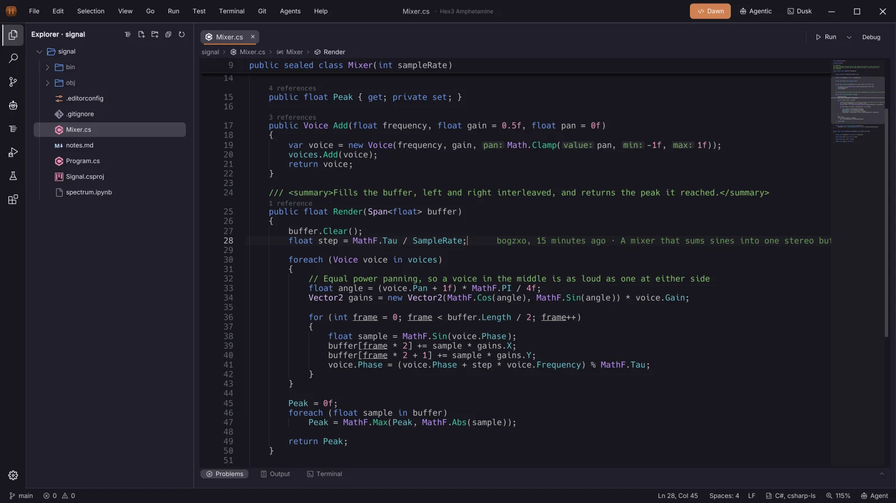
Dawn, the editor. The colours, the hints, the reference counts and the blame are csharp-ls and git talking, not a mockup. It follows your system the way Hex's own Solstice and Solstice Day do.
- 516 msto Dusk's first frame, from a cold process
- 852 msto Dawn's, its window up at 456
- 49.3 MiBzipped, all three faces and their assets
- 0browsers shipped inside it
Measured, not vibes
Fast as fuck, with receipts
Fresh measurements of Hex 3.1.0 Amphetamine: Release, Windows x64, NativeAOT, self-contained. Taken on 18 November 2026 on Windows 11, a Ryzen 5 5600X, an RTX 3060 and 32 GB of RAM. Ten launches of each face after one that's thrown away, because the first one fills the shader caches.
| Measurement | Dawn, the editor | Dusk, the terminal |
|---|---|---|
| Process start to first rendered scene, median | 852 ms | 516 ms |
| First-frame range, 10 launches each | 821–1010 ms | 484–534 ms |
| Process start to window shown, median | 456 ms | 389 ms |
| Idle working set, median | 201.4 MiB | 117.2 MiB |
| Idle CPU, median, of one logical core | 2.96% | 0.76% |
First frame means first frame; it doesn't mean every language server has finished indexing. Memory and CPU cover Hex itself, not child shells or language servers. This is one machine, and a busy one. It's not a race rigged against somebody else's editor. Dawn got slower and we're saying so: 2.8.0 measured 492 ms. 3.1 sets up a whole agent workspace before its first frame and it shows. Method, raw samples and reproduction commands.
A game engine underneath. Seriously.
Hex is C# compiled ahead of time to native code. No JIT warming up while you stare at a splash screen. The Horizon engine draws the interface through Vulkan, with rendering on its own thread. On macOS, MoltenVK bridges that to Metal.
There's no DOM to lay out, no browser to haul around, and no reason a text editor should need either.
// Hex.exe, start to first frame
main 16 ms
device made 316 ms
window shown 456 ms
scene set up 797 ms
first frame of the scene 852 msUnedited, 1600 × 900
Look at the bloody thing
Every picture is the real window, straight off the build that was measured. An agent took them, driving Hex through its own MCP server. Open one for the full size.


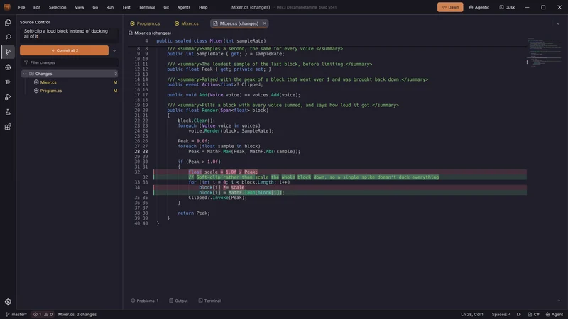

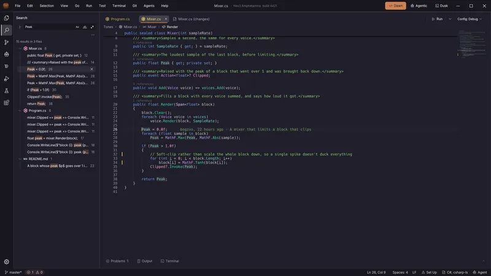

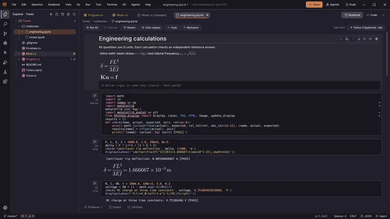


Dawn, the editor
Lightweight doesn't mean “does fuck all”
-
Code
Language-server completion, hovers, definitions, references, rename, quick fixes, inlay hints, reference counts and semantic highlighting. Folding, sticky scroll, minimap, peek, format on save and
.editorconfig. Sixteen language servers come declared, C# to Rust. -
Git
Gutter changes, stage and revert, inline blame, commits, branches, stash, history, diffs and merge-conflict controls. Keep the context next to the code instead of juggling windows to find out what you changed.
-
Find your shit
Quick Open, a command palette of 360 commands, workspace search and replace, searchable settings and configurable keybindings with conflict reporting. Import VS Code settings instead of rebuilding your preferences by hand.
-
Run, debug and test
Workspace tasks, a Test Explorer and a debugger with breakpoints, conditions, stepping and watches. .NET through netcoredbg, which Hex fetches the first time you press F5; Python through debugpy; D, C and C++ through lldb-dap.
-
Documents that do things
Jupyter notebooks with real kernels and outputs; native Markdown previews with tables and maths. Kernels are separate tools, not secretly bundled into the download number.
-
Build interfaces
A live layout designer for Horizon and HIDL, component properties, and evaluated HIDL values beside the source. Extensions are small HIDL scripts, with a catalogue inside Hex.
Dusk, the terminal
Dusk. A whole fucking terminal.
Tabs, split panes, shell profiles, search, scrollback and a drop-down mode. ConPTY on Windows, a PTY on Linux and macOS. Run it on its own with Hex --dusk, use the terminal panel inside Dawn, or switch faces from the title bar with Ctrl+Alt+Shift+D. The editor stays where you left it.
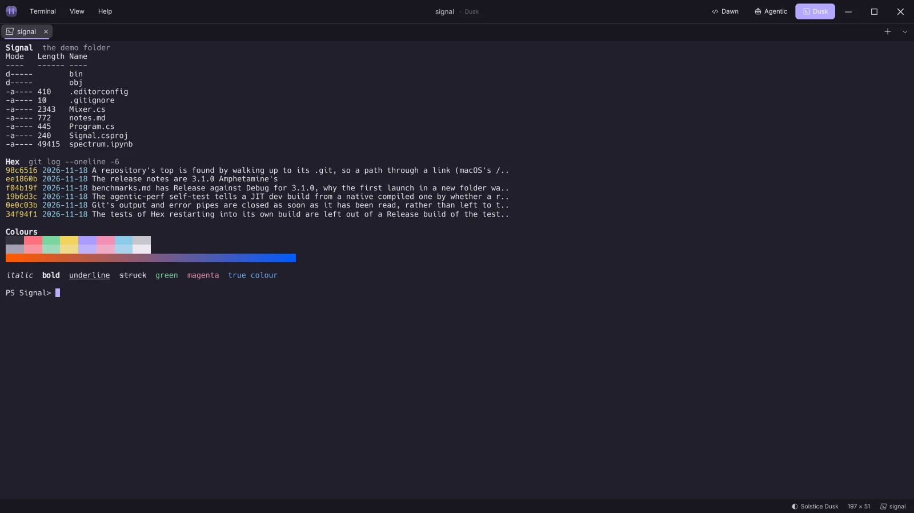
PowerShell running a small showcase script: actual files, actual Git history, ANSI colors.
Agentic, the agents' face
Bring your own agent. Or don't.
Hex doesn't sell you an AI subscription. Agentic runs your installed Claude Code, Codex or Antigravity CLI, with your own account. A fleet of chats side by side, each card saying its model, tokens, cost and how full its context is. Your provider's usage charges still belong to your provider.
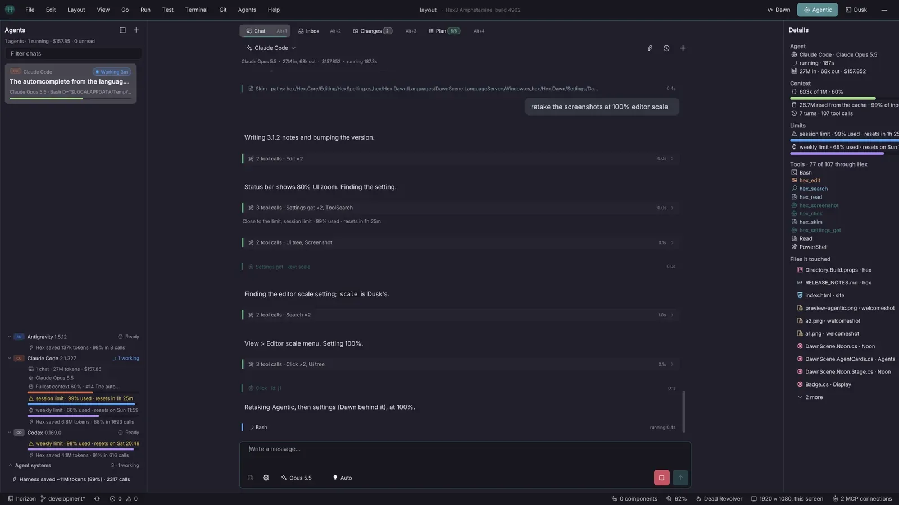
Five small Claude Code chats at work on the demo project. This one was asked to add envelopes to the mixer, asked leave to build, ticked off its list and said what it left undecided.

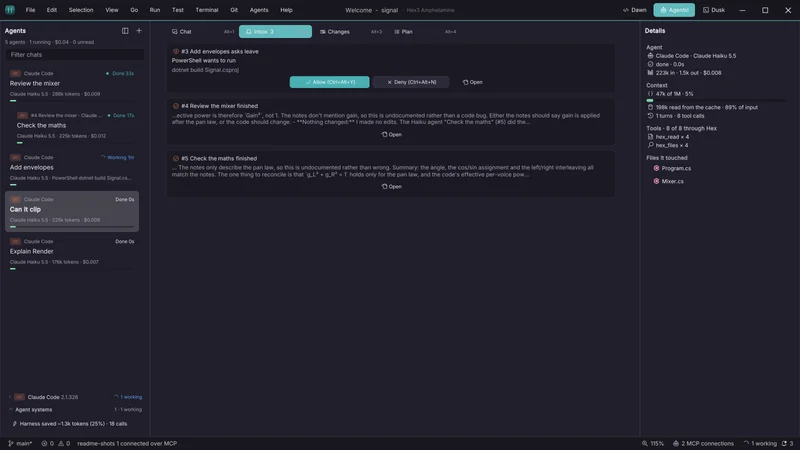

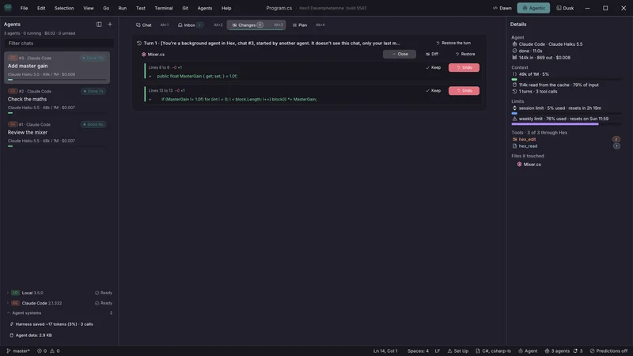
-
The fleet
Every chat is a card: its agent system, model, tokens, cost, what it's doing right now and a thin bar of how full its context is.
-
Agents that start agents
One chat can start others, of any system and model, and they sit under it a step in. It waits for them and reports for all.
-
Details, down to the cent
Turns, tokens in and out, cost, how much came from the cache, your plan's limits, which tools went through Hex and the files it touched.
-
One method, not the whole bloody file
Over MCP Hex exposes 71 tools: repository maps, symbol search, references, focused code reads, screenshots, editor commands, the debugger, notebooks and terminals. Off until you enable it.
-
86% that never went near a context window
Writing Hex's README took 54 harness calls that handed back 154,000 characters where grep and whole-file reads would have read 1,077,000.
Appearance
Make it look how you want
Hex3 comes in Solstice: flush panes and an accent for each face, orange for Dawn, violet for Dusk, teal for Agentic. Go light with Solstice Day, back to quiet Graphite, or float the panels in glass. Keep it calm, make it loud, or switch the effects off. It's your screen, for fuck's sake.

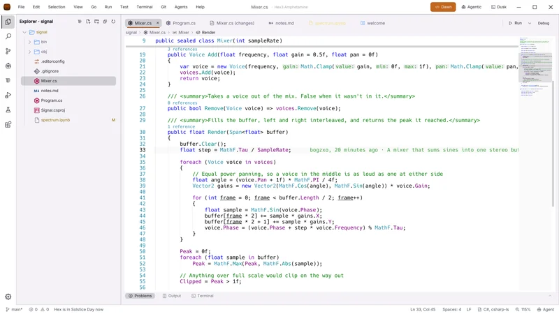

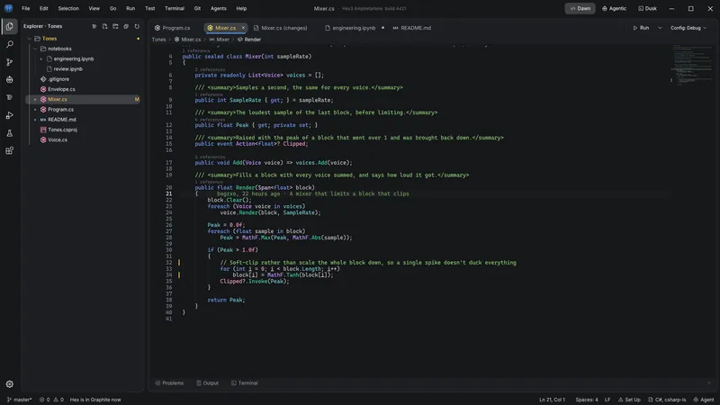

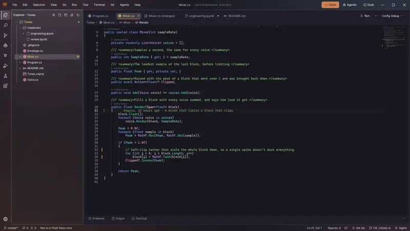

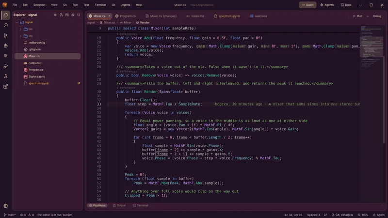
Same code, different mood.
The fine print, in the open
What it doesn't do
It doesn't track you
No built-in telemetry, analytics account or crash-report upload. No sign-in to edit code. It does make network requests for features that need them: update checks, changelogs, extension, debugger and language-server downloads, and the services you choose to use. “No telemetry” isn't a claim that git fetch works by fucking magic.
It doesn't require an installer
The portable archive works too. Hex uses a writable settings folder beside the executable when available, with the platform's application-data folder as a fallback.
Hex 3.1.0 Amphetamine
Get it
Pick your machine. Setup handles installation, shortcuts and updates. Portable is a ZIP you unpack and run. Neither needs a separate .NET installation.
| System | Setup | Portable |
|---|---|---|
| Windows | x64 · ARM64 | x64 · ARM64 |
| Linux | x64 · ARM64 | x64 · ARM64 |
| macOS | Apple silicon · Intel | Apple silicon · Intel |
Windows needs 10 1809 or newer. Linux needs a Vulkan loader and driver. macOS needs 11 or newer; the build is unsigned, so xattr -dr com.apple.quarantine /path/to/Hex if macOS blocks it. All releases · What changed · Installation details
From source
Build the bloody thing
Use the SDK in global.json, currently a .NET 11 release candidate. A standalone checkout needs Horizon's development branch as well as Hex's extensions.
git clone --branch development --recursive https://github.com/bogzxo/hex.git
cd hex
git clone --branch development --recursive https://github.com/bogzxo/horizon.git horizon
dotnet build Hex/Hex.csproj
# the Windows x64 native build measured above
dotnet publish Hex/Hex.csproj -p:PublishProfile=FolderProfileFound a bug? Open an issue with your OS, Hex version and steps to reproduce it. Want to fix it? Send a focused pull request and say how you tested it. Hacking on Hex covers the source and self-tests.